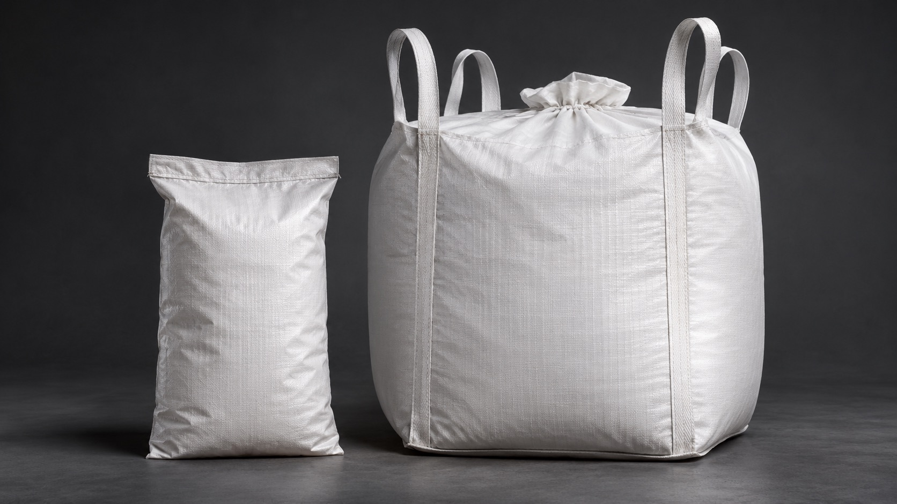

Bor bazlı endüstriyel flux tozuBoron-based industrial powder flux
Metali birleştiren kimya.The chemistry that joins metal.
Bakır ve pirinç sert lehim ile alevle bronz kaynağı için planlanan boraks pentahidrat ve borik asit esaslı toz flux.A planned borax pentahydrate and boric acid powder flux for copper and brass brazing and flame braze welding.
Borat esaslı flux'lar, yüksek sıcaklıkta metal yüzeyindeki oksitleri çözer. Alazbor, boraks pentahidrat ve borik asidi kontrollü karıştırma ve elemeyle tutarlı bir flux tozuna dönüştürmek üzere kuruluyor.Borate-based fluxes dissolve oxides on metal surfaces at high temperature. Alazbor is being set up to turn borax pentahydrate and boric acid into a consistent flux powder through controlled blending and sieving.
İki hammadde, bir amaçTwo raw materials, one job
Boraks pentahidrat ve borik asit. Uygulamaya göre karışım oranı, ürün doğrulama çalışmalarıyla belirlenecek.Borax pentahydrate and boric acid. The blend ratio per application will be set through product validation.
Parti tutarlılığıBatch consistency
Planlanan hat: kantarlı dozaj, kontrollü karıştırma ve eleme ile tane boyutu ve oranın sabit tutulması.Planned line: weighed dosing, controlled blending and sieving to keep particle size and ratio steady.
Isıl işlem yokNo heat treatment
Fırın ya da kimyasal reaksiyon yok; hammaddelerin hidrat yapısı korunarak paketlenecek.No furnace or chemical reaction; raw materials keep their hydrate structure through to the bag.
Bakır ve pirinçle çalışanlar için.Made for copper and brass.
Alevle sert lehimden bronz kaynağına: borat esaslı flux'lar yüksek sıcaklıkta metal oksitlerini çözer. Alazbor ürününün uygunluğu her uygulama için ayrıca doğrulanacak.From flame brazing to braze welding: borate-based fluxes dissolve metal oxides at high temperature. Suitability of the Alazbor product will be validated separately for each application.
Basit hat. Sıkı kontrol.Simple line. Tight control.
Kurulmakta olan hattın planı: kapalı ve izlenebilir. Kimyasal reaksiyon yok; işin özü doğru tartım ve homojen karışım.The plan for the line being set up: enclosed and traceable. No chemical reaction; the craft is accurate weighing and a homogeneous blend.
KabulIntake
Big-bag boşaltma, kuru depolama.Big-bag discharge, dry storage.
DozajDosing
Reçeteye göre kantarlı tartım.Weighed to the recipe.
KarıştırmaBlending
Ribbon mikserde homojenlik.Homogenised in a ribbon mixer.
ElemeSieving
Titreşimli elekte tane kontrolü.Particle control on a vibrating screen.
PaketlemePacking
25 kg torba veya big-bag.25 kg bags or big-bags.

İki seçenek, kuru depolama.Two formats, kept dry.
Borik asit nem çeker; ürün kuru ve kapalı depoda saklanmalıdır. Planlanan ambalaj seçenekleri:Boric acid absorbs moisture, so the product must be stored dry and closed. Planned packaging options:
- TorbaBag25 kg
- Big-bagTalebe göreOn request
- Etiket ve SDSLabel & SDSNihai formül sonrasıAfter final formulation
Uygulamanıza uygun flux'ı birlikte değerlendirelim.Let's assess the right flux for your application.
Seçimlerinizi yapın; sağdaki özet kendiliğinden dolar. Sonra e-postayla gönderin ya da metni kopyalayın. Form bir ürün uygunluk sonucu vermez.Make your choices and the summary on the right fills itself. Then send it by email or copy the text. The form does not issue a product suitability verdict.
Neyin hazır, neyin planlı olduğunu açıkça söylüyoruz.We say plainly what is ready and what is planned.
Aşağıdaki testler kalite kontrol planımızdır; sonuçlar, üretim ve ürün doğrulama tamamlandıkça paylaşılacak.The tests below form our quality control plan; results will be shared as production and product validation are completed.
Bir sonraki bağlantı sizin olsun.Let's make your next joint.
Teknik görüşme, numune ön talebi ve ön ticari görüşmeler için yazın; genellikle bir iş günü içinde dönüyoruz.Write to us for technical discussions, preliminary sample requests and early commercial talks; we usually reply within one business day.
info@alazbor.com.tr- Satış ve numuneSales & samples
- satis@alazbor.com.tr
- Teknik destekTechnical support
- teknik@alazbor.com.tr
- UnvanLegal name
- Alazbor Kimya Sanayi ve Ticaret Ltd. Şti. (kuruluş aşamasında)(in formation)
- MerkezRegistered office
- Gemlik / Bursa
- İlk üretim hedefiFirst production
- Yaz 2027Summer 2027
Bor bazlı endüstriyel flux tozu. Gemlik / Bursa.Boron-based industrial powder flux. Gemlik, Bursa.